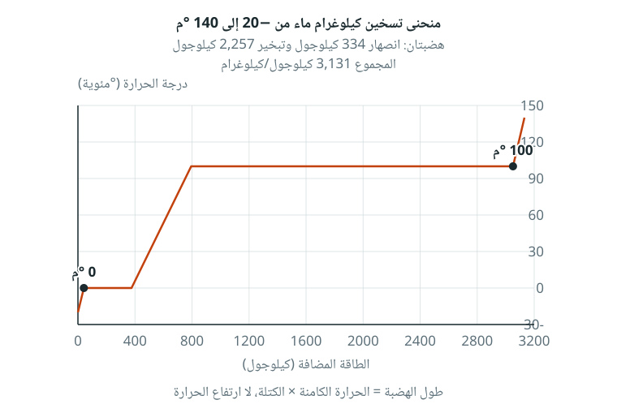

تغيّر الطور
Phase Change
انتقال المادة بين الصلب والسائل والغاز عند درجة محددة، تمتص فيه الطاقة الكامنة أو تُطلق دون تغيّر في الحرارة، فيظهر على منحنى التسخين هضبة ثابتة حتى يكتمل التحول.
تغيّر الطور انتقال بين حالتَي تجمّع مختلفتين فيزيائيًّا مع بقاء الهوية الكيميائية للجزيء. عند درجة التحول يتساوى كمون كيميائي الطورين (الكيميائي الحرّ لكل مول)، فيتعايشان: جزيئات تغادر الشبكة البلورية وأخرى تعود إليها بالمعدل نفسه.
إضافة حرارة عند هذه الدرجة لا ترفع الحرارة، بل تغيّر النسبة بين الطورين. على منحنى الحرارة–الطاقة تظهر هضبة أفقية طولها يساوي حرارة التحول مضروبة في الكتلة. منحنى كيلوغرام ماء من −20 إلى 140 °م يمرّ بهضبتين: انصهار عند 0 °م بطول 334 كيلوجول، وتبخير عند 100 °م بطول 2,257 كيلوجول. الهضبة الثانية أطول بنحو سبعة أضعاف، وهي التي تحدد زمن الغليان في أي عملية طبخ أو توليد بخار.
كيف تعمل الظاهرة؟
في الصلب تهتز الجزيئات حول مواقع ثابتة، ولا تكفي طاقتها للانتقال. عند تسخينها تزداد سعة الاهتزاز حتى تتغلب على حاجز الطاقة الذي يحفظ الشبكة، فتنشأ نوى سائل عند الأسطح والعيوب والشوائب؛ نموّ النواة يحرّر طاقة سطحية، فإن كانت النواة أصغر من حدّ حرج تذوب من جديد.
عند اكتمال الانصهار تتحرك الجزيئات بحرية أكبر وتزيد السعة الحرارية. ثم عند درجة الغليان يصبح ضغط البخار مساويًا للضغط المحيط، فتتكون فقاعات بخار داخل الكتلة وتصعد. الطاقة الداخلة عند الغليان تُصرف إلى التغلب على التجاذب ودفع الضغط المحيط، لا إلى رفع متوسط الطاقة الحركية؛ ولهذا تبقى الحرارة ثابتة ما دام الطوران موجودين.
العلاقة بالأرقام
طاقة كيلوغرام ماء من −20 إلى 140 °م: تسخين الجليد 2.09 × 20 = 41.8 كيلوجول، انصهار 334، تسخين الماء 4.186 × 100 = 418.6، تبخير 2,257، تسخين البخار 2.0 × 40 = 80؛ والمجموع 3,131 كيلوجول/كيلوغرام.
التوزيع يكشف الأولوية الهندسية: التبخير يستهلك 72% من الطاقة الكلية، والانصهار 10.7% فقط. لذلك يهتم تصميم المخازن الحرارية بالتبخير والتكاثف أكثر من اهتمامه بالانصهار، بينما تُستخدم أملاح الانصهار في التخزين المنزلي لأن هضبتها تحدث عند درجات قريبة من حرارة الغرفة. وميل منحنى التوازن يحدده كلاوزيوس–كلابيرون: dP/dT = L/(T·Δv)، ولهذا يغلي الماء عند 71 °م على قمة إيفرست حيث الضغط نحو 34 كيلوباسكال.
مفاهيم متقاربة
الخلط الأول: مساواة تغيّر الطور بتفاعل كيميائي. الجزيء نفسه يبقى H₂O قبل التحول وبعده؛ ما يتغير هو الترتيب والمسافات لا الروابط الكيميائية. الخلط الثاني: مساواة الانصهار بالذوبان في مذيب؛ الأول انتقال طوري بحت، والثاني تكسّر شبكة بتدخل جزيئات المذيب.
الخلط الثالث: القول إن الحرارة النوعية لا نهائية عند التحول. الحرارة النوعية غير معرّفة هناك لأن الحرارة لا ترفع الدرجة؛ التعريف يشترط ΔT، فغيابه يجعل النسبة غير محددة لا لا نهائية. والخلط الرابع: اعتبار الغليان والتبخّر شيئًا واحدًا؛ التبخّر سطحي يحدث عند أي درجة، والغليان تحوّل في كتلة السائل عند درجة تشبّع الضغط.
حدود التطبيق
الوصف يخصّ مادة نقية في توازن. في المخاليط يحدث التحول على مدى حراري، وقد تظهر منطقة هلامية أو سلوك سائل–صلب غير متبلور بدل هضبة واضحة. وعند تجاوز النقطة الحرجة يزول التحول ويصبح الانتقال مستمرًّا بلا حرارة كامنة.
في التحولات السريعة تسود حالات غير مستقرة: ماء يُسخَّن فوق درجة غليانه دون أن يغلي، وبخار يتكاثف متأخرًا؛ وفي هذه الحالات لا تعطي الهضبة المقاسة القيمة الجدولية. وفي المسام النانوية تنخفض درجة الانصهار بانحناء السطح (علاقة جيبس–طومسون)، وقد لا يتجمد الماء المحصور فوق −30 °م. كما أن البلازما حالة رابعة لا يصفها منحنى التسخين هذا.

| الكمية | القيمة | المصدر |
|---|---|---|
| الطاقة الكلية لتسخين 1 kg ماء من −20 إلى 140 °م | 3,131 كيلوجول | [1] |
| حرارة انصهار الجليد | 334 كيلوجول/كيلوغرام | [2] |
| حرارة تبخير الماء عند 100 °م | 2,257 كيلوجول/كيلوغرام | [2] |
| السعة الحرارية النوعية للجليد | 2.09 كيلوجول/(كيلوغرام·كلفن) | [3] |
المصادر
- 1 Phase Transitions — OpenStax, Chemistry 2e. openstax.org/books/chemistry-2e/pages/10-3-phase-transitions · اطُّلع عليه 2026-11-16
- 2 OpenStax College Physics 2e — Phase Change and Latent Heat — OpenStax. openstax.org/books/college-physics-2e/pages/14-3-phase-change-and-latent-heat · اطُّلع عليه 2026-11-16
- 3 Liquids and Solids — OpenStax, Chemistry 2e. openstax.org/books/chemistry-2e/pages/10-introduction · اطُّلع عليه 2026-11-16
استشهد بهذا المصطلح
الصيغتان مبنيتان من بيانات الصفحة نفسها: العنوان والتاريخ ورابط النسخة المنشورة.
تغيّر الطور — Phase Change. (2026). ديوان المعرفة — انفراد. https://infiradev.com/diwan/terms/phase-change.html
@misc{phase-change2026,
title = {تغيّر الطور},
titleaddon = {Phase Change},
howpublished = {{ديوان المعرفة — انفراد} — مرجع علمي عربي},
year = {2026},
url = {https://infiradev.com/diwan/terms/phase-change.html},
urldate = {2026-11-16},
note = {مراجعة علمية: مراجعة آلية — ديوان المعرفة (روابط المصادر + عقد المحتوى + وجود الرسم) 2026-11-16}
}
راجعه: مراجعة آلية — ديوان المعرفة (روابط المصادر + عقد المحتوى + وجود الرسم) 2026-11-16 · 2026-11-16 · آخر تحديث 2026-11-16